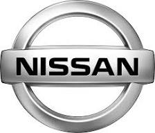
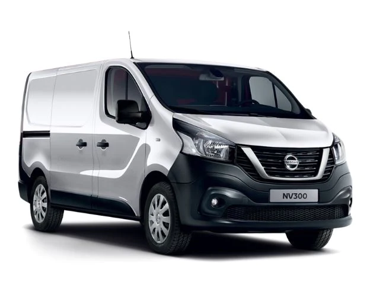

Nissan models

Nissan NP300 Navara
The Nissan NP300 Navara is a pickup truck produced by the Japanese automobile manufacturer Nissan. Here is some general information about this model:
Launch: The NP300 Navara was first launched in 2014, succeeding the previous model, the Nissan Navara.
Versions and configurations: The Navara is available in different configurations, including single cab, double cab, and king cab versions. It also offers various trim levels and options, tailored to the needs of drivers and businesses.
Engines: Engines may vary depending on the market, but the NP300 Navara is often offered with a range of diesel and gasoline engines. These engines are designed to deliver a combination of performance and fuel efficiency.
Transmission: The transmission can be manual or automatic, depending on the configuration chosen. Some models can also be equipped with an all-wheel drive system for better traction in difficult driving conditions.
Exterior design: The Navara often adopts a robust and modern design, reflecting its usefulness as a utility vehicle. It may also include features such as roof racks, running boards, and other accessories to improve practicality.

Nissan NV300
The Nissan NV300 is a utility van produced by the Japanese automobile manufacturer Nissan. Here is some general information about the Nissan NV300:
Launch and Generation: The Nissan NV300 was launched in 2016. It is a mid-size model in Nissan's cargo van range.
Platform: It is based on the common Renault-Nissan-Mitsubishi Alliance platform, thus sharing certain characteristics with other utility vehicles such as the Renault Trafic.
Body: The NV300 is available in several configurations, including van, combi (used for passenger transport), and cab chassis versions allowing adaptations for different professional needs.
Engines: It is equipped with diesel engines, offering different power options depending on needs. These motors are designed to combine performance and energy efficiency.
Load Capacity: The Nissan NV300 is designed to meet the needs of professionals by offering a competitive payload capacity, making it suitable for a variety of commercial uses.

Nissan Leaf
The Nissan Leaf is a compact electric car produced by the Japanese automobile manufacturer Nissan. Here is some information on the Nissan Leaf:
The Nissan Leaf was launched in December 2010 as one of the first mainstream electric cars available on the market.
Autonomy: The different generations of the Leaf have seen significant improvements in terms of autonomy. The base version typically offers a range of around 150 to 250 miles (around 240 to 400 kilometers) on a single charge, depending on the model and driving conditions.
Motorization: The Leaf is equipped with an electric motor powered by a lithium-ion battery. The Leaf's electric motors provide quiet, smooth acceleration.
Performance: Although the Leaf is generally considered a compact, fuel-efficient car, newer models can offer quite competitive performance in terms of acceleration and handling.
Charging: The Leaf can be charged from standard household outlets, but for faster charge times it can also be plugged into fast charging stations.

Nissan 180SX
The Nissan 180SX is a compact sports car produced by the Japanese automobile manufacturer Nissan. Here is some general information about the 180SX:
Years of production: The Nissan 180SX was produced from 1989 to 1998.
Platform: The 180SX shares the platform with the Nissan Silvia, another sports car from Nissan.
Powertrain: It is usually equipped with a turbocharged inline four-cylinder engine. Engines may vary depending on the years of production.
Transmission: The 180SX is often equipped with a manual transmission, although automatic models were also produced.
Configuration: It is a coupe-type car, often characterized by a sloping roofline and a two-door configuration.
Drift: The 180SX is popular in drift culture, in part due to its rear-wheel drive configuration, light weight, and design suitable for performance modifications.
Design: It is appreciated for its sporty design, in particular its retractable headlights which have become iconic.